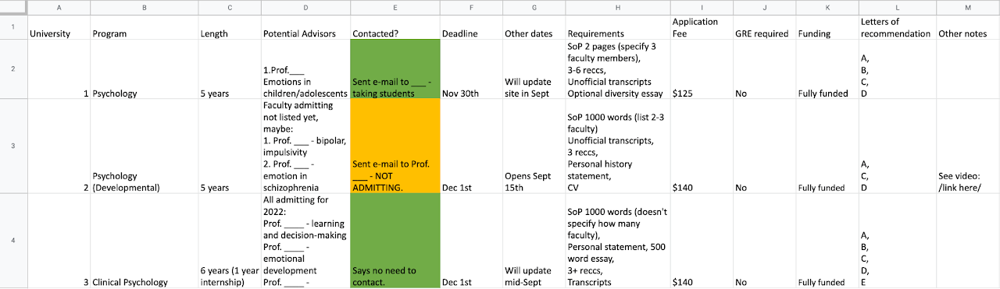

Deciding whether to pursue a PhD
Do you enjoy research? This is the most important question I would pose to those thinking about PhD study.
Traditionally, PhD study was primarily a prerequisite for post-doctoral and faculty positions in universities. There is now increasing recognition of the value that PhD graduates bring outside of academia. So, you shouldn’t feel that completing a PhD means you have to pursue a career as an academic professor/researcher. There are tons of industry positions that want the research skills of a Psychology PhD graduate (e.g., user experience research, scientific consultancy). You also don’t need to know what you’re going to do post-PhD. Career interests may change throughout your studies and this is ok! The skills you gain through a PhD are undoubtedly useful and can be applied to many settings.
However, it’s worth noting that many psychology and research-related careers do not require a PhD. If you’re not at all interested in any positions that require/like this degree (whether that’s in clinical practice, academia, or industry), it might not make sense to go down this route. You can always spend some years doing other things and consider PhD study later on.
There may be personal life circumstances that encourage or discourage you from PhD study. There are too many to go into detail about, but this includes financial and relationship (family, friends, partners) factors. There are no ‘right’ paths and it is important to prioritise things that will contribute positively to your wellbeing.
Clinical vs. non-clinical psychology PhDs
Clinical Psychology PhDs typically involve 5 years spent on-campus and 1 year spent completing a clinical internship. Many programs emphasise research, though this has a clinical focus, and culminate with a research dissertation much in the same way as non-clinical PhDs. Course requirements are often similar to those of non-clinical PhDs, plus some specific clinical courses. These programs will prepare you for becoming a licensed clinical psychologist in the US.
Psy.D. programs are another option for those aspiring to be licensed psychologists. These focus more heavily on clinical work, with less research experience, and take 4-5 years.
Counseling Psychology PhDs prepare you for becoming a licensed psychologist. Programs are focused on clinical practice, but often include research exposure, and take ~5 years.
There are several Master’s degrees that prepare you for licensure e.g., in social work, counseling psychology.
Non-clinical Psychology PhDs have no patient-facing clinical component and instead involve full-time research over 5 years. Psychology departments are often structured into different areas e.g., clinical psychology, developmental psychology, cognitive psychology, quantitative psychology. Faculty in clinical areas will take on Clinical Psychology PhD students, and usually will not work with non-clinical students. All other areas are open to non-clinical PhDs. Some schools will require you to indicate a preference for one or more of these areas in your application, while others won’t. Area decisions should largely rest on where the advisor you’re applying to fits in, though you should research whether training/courses differ by area.
Here are some pointers on deciding whether to apply for clinical vs. non-clinical programs:
Try to get experience in both research and clinical settings. The latter doesn’t have to involve directly working with patients - it could be research in a hospital or social work setting, for example. This is the best way to get an idea of what path you’d enjoy most. If this isn’t possible, speak to those who have had these experiences.
A clinical/counseling Ph.D., Psy.D., or relevant Master’s degree is the way to go if you know you want to become a licensed psychologist working with patients.
Non-clinical psychology is the way to go if you know you want a research career without being a practising psychologist, and you don’t care too much for gaining intensive clinical experience.
Mental health research is not limited to clinical PhDs. Many non-clinical faculty work on research that ultimately aims to improve the wellbeing of those with mental health difficulties. This can involve working with clinical populations.
Think about which field needs you most. Would you benefit the research or clinical world most with your skills? I felt like my interests and skills would be better suited for research than clinical practice - I have a passion for the research process, enjoy learning methods for statistical analysis, and enjoy sitting at my desk working on research.
Someone who completes a clinical/counseling psychology PhD or PsyD can end up in academic/industry research positions. A non-clinical PhD grad cannot easily pivot to a clinical psychologist position, though there are non-clinician roles in clinical settings.
You can always apply for clinical-focused PhDs at some schools and non-clinical PhDs at others.
The following content is based on my experience applying to non-clinical PhDs. However, clinical psychology PhD and non-clinical PhD applications are incredibly similar, so I hope these tips are helpful to all prospective students. (Unfortunately, I am not familiar with PsyD, Counseling Psych PhD, or Masters applications)
Finding labs to apply to
- Research interests
This is the no. 1 factor that should guide your applications. PhD applications are targeted to the advisor/lab you want to work with, so your research interests should overlap with theirs. It may be difficult to pin down your research interests at the outset. But once you start reading faculty and lab biographies, you will likely instinctually get a feel for the kind of work that draws you in.
There are many ways to identify possible advisors:
The unstructured way (this is what I did): Maybe you start with a name from papers that you found interesting, or perhaps you have some universities or cities floating around in your mind. This leads you to a program’s faculty page and you find couple of potential advisors. Maybe they aren’t taking new students, but their collaborator (which you know from looking at their research papers) at a different university is. Or maybe you look up whether their own PhD advisor is still taking on students. Once you narrow down your search to the field you are most interested in, you will probably find that there are a select few labs doing said research and they will have close connections.
If you currently or have previously worked with an academic advisor (e.g., during undergraduate or Masters studies), you could ask them if they know names of researchers in your field of interest.
Some professors will post on Twitter to highlight that they’re accepting PhD students.
- Advisor
When embarking on PhD study, you enter a personal relationship with your advisor. You can use info from their lab websites, Twitter and interviews on YouTube/other sites to get an idea of the person they are. At this point, I believe that factors such as seniority or lab size are not very important.
- Funding
Funding varies hugely between schools. You should be able to find details of stipends and teaching requirements online, otherwise you can reach out to faculty or admin staff. PhD students in the US are, on the whole, underpaid and stipends have not been raised in line with cost of living increases. It is worth understanding how much and where the funding comes from for any schools you are considering. Even within the same program, faculty may have varying funds available to support PhD students.
There are other ways to seek out funding e.g., through grants and fellowships outside of the university. However, these shouldn’t be relied on from the outset as they are very competitive and not guaranteed.
Note. As an international student, I found myself limited to private US universities as these offered the same funding package to international and domestic students. If you are a non-US citizen, look carefully into whether funding for international students is available.
- Location
Where do you want to live for ~5 years? Climate, walkability, entertainment, food, cost of living and proximity to friends/family are some things to think about. If you’ve visited possible areas already, that’s great. If not, there’s a wealth of information online. I would definitely recommend visiting the schools once you have received acceptances.
- Resources/money
If you want to perform research that requires specific resources e.g., neuroimaging equipment, you’ll need to make sure this is available at the school. When it comes to the interview stage, you can ask more about how use of this equipment works and whether there is appropriate support/training for grad students.
The more money an institution or lab has, the greater research flexibility you typically have (note this is not the same as research skills you will gain). The importance of this depends on your working style and how closely aligned your research interests are with the advisor. Will you be happy working under specific projects that your PI has funding for? Or do you want to independently pursue other avenues of research that extend the lab’s work? The latter will likely require some sort of funding. It can be difficult to ascertain this situation before applying, but university endowments and a PI’s history of grant funding (displayed on their CV) can provide an idea.
How many schools to apply to
I’d roughly recommend applying to 5-12 schools, depending on the following factors:
- Labs that fit your interests
As discussed above, this is the most important factor that ought to guide your application decisions. You should create a shortlist of potential schools and spend time investigating whether these labs would provide you with the environment to carry out research that you’re passionate about. Since not all labs accept students every year, you will hopefully end up with <15 schools. Some research areas may only leave you with a couple of labs that you want to apply to.
- Money
Applications quickly rack up in cost. My applications averaged $100 each. Many universities offer fee waivers for those experiencing financial hardship - this is sometimes limited to U.S. citizens.
- Time/effort
Completing PhD applications takes a lot of time. You should work on applications in order of preference, taking into account deadlines if they differ. Depending on other commitments in your life, including your general wellbeing, you may have to limit the number of applications you complete.
- Clinical Psychology
Clinical psychology programs are more competitive than non-clinical programs. <5% are accepted into most programs e.g., USC, UW, Northwestern. I’d recommend applying to more programs because of this, though this should not come at a cost to the quality of each application.
Reaching out to advisors
Contacting advisors via e-mail prior to applying is a good thing to do, as it puts your name on their radar. If it isn’t clear from their lab website or the Psychology department’s site, this is the time to ask advisors whether they are accepting students that year. The process can seem daunting, but is quite simple once you have a draft structure for your message. It should be short, ~3-4 sentences, and succintly 1) describe your current position/undergraduate degree, 2) describe your research interests and how they align with the lab, 3) ask the advisor a question and/or simply state that you’re interested in applying to their lab (some people advise against the latter but I think this is ok). Include your CV in this e-mail.
If you don’t receive a reply, follow up after at least 2 weeks. From my experience, advisors are generally friendly people who will send friendly replies. This is especially the case if you’ve narrowed down your potential advisor pool by taking a look at lab websites, Twitter, and YouTube videos. Their reply acts as a first indicator of the kind of person/advisor they are. Of course, you can’t tell too much about a person through an e-mail, but definitely take note of any red flags that pop up at this point.
It’s ok for these e-mail exchanges to be short and end after 1 or 2 replies - unless you think of any further important questions.
PhD Applications
Application Spreadsheet
I highly recommend creating a spreadsheet while researching programs to apply to. Mine looked something like this:

You can create a similar tracking spreadsheet for completing your applications. This could include: creating account on application portal, application filled out, SoP written, application submitted, all letters of recommendation received. Personally, I just had a written timeline on my iPad Notes where I checked off each SoP/Application as I completed them.
Statement of Purpose (SoP)
The SoP is arguably the most important piece of your application and the most time-consuming. It gives you the space to highlight your achievements and skills, making it clear to professors why you would be a good fit for their lab. The content should primarily focus on 1) your research experiences and the skills you gained, and 2) how these research experiences link to the interests of the lab. There is a typical limit of 1000 words or 2 pages.
There are different approaches to laying out your SoP. I wrote in chronological order about my research experiences, making sure to link each one with the next. You could also group your paragraphs by type of experience or research topic. You should tell a coherent story with your statement, laying out your research journey and how it’s led to you pursuing a PhD.
Each SoP should be tailored to the individual lab you are applying to. From the eye of the reader (your potential advisor), they should have no doubt that this statement was written for them to read. It’s a good idea to have a consistent outline, but every paragraph should be different between applications. Some of this tailoring is more obvious, for example including the program name or the names of advisors you want to work with. The difficult part is marketing your research background and interests to each specific lab. If you have obvious overlap between your past research and the lab’s work (e.g., working with similar methods, populations, or research topics), it will be easier to draw these links. However, it is totally ok for your PhD research interests to differ from past work - mine certainly did. In this case, make sure to explain how each experience pushed you to investigate a different direction.
There should be one paragraph, which usually works well at the end, that ties together the SoP. Here, boldly state which lab you want to join and why this makes sense given your research experiences/interests. Many schools will tell you to include between 1-3 potential faculty advisors in your SoP (often you’ll also indicate this on the online application). However, you would still be joining one lab (typically) so make sure to focus your statement around this lab, with brief mentions of additional interests that fit with the other labs. I largely wrote my SoPs as if I was applying to a single advisor/lab, but included a couple of sentences in my last body paragraph indicating one or two other faculty members that I would be keen to work with.
While it should be clear that your interests align with the lab’s, be careful not to limit yourself to one specific type of study/research. Flexibility is a good thing here, and advisors will generally appreciate someone who is open to working on varying projects. So rather than saying you want to research ‘responses to emotional faces using fMRI and eye-tracking data, in 10-15 year olds with diagnoses of __ and __’, you can say that you’re ‘interested in using multiple methods to examine emotional processing, particularly in adolescents’. It can be difficult to find the right balance here and it depends on how restricted the lab’s research is. If the lab casts a wide research net, it’s ok to either focus on one particular area that you’re passionate about or touch on some different topics.
Overall, be true to yourself! Think deeply about the experiences that had the most impact on your academic/research life and the fundamental questions you want to answer.
If you know any faculty members or PhD students, regardless of the school they’re at, reach out and see if they’d be willing to review your SoP. ASFP is also a fantastic program which does this for you.
Letters of Recommendation
Schools will typically request between 3-6 letters of recommendation. These should come from people who know you well in an academic/research context. This could be:
Lab PIs
Professors
Program directors
Managers if you have been employed (particularly if this was a research-related job)
Make sure that you are confident in your letter-writers providing a positive statement about you.
You should reach out to these people well in advance of the relevant deadline - I suggest by the end of October. Provide information about the schools you’re applying to and deadlines. You can also include the rough field of research for each advisor, so your letter-writers can tailor their statement if they choose to. Schools generally allow you to submit your application before letters of recommendation are submitted, so you don’t need to wait for them to come in. However, do follow up if the final deadline is approaching and letters have not been sent in.
Preliminary Conversations
A few weeks after the application deadline has closed, many advisors will contact their favourite candidates to have a preliminary conversation. This will usually take place on Zoom. From my experience, the format of these conversations is incredibly similar to what will take place in formal interviews. It’s primarily a time for them to get to know your research experiences and interests. There’s space for you to elaborate on the details included in your SoP and show off what makes you a unique candidate.
Prior to these conversations, you should take time to look through your potential advisor’s research papers (ideally you would already have made a start on this prior to applying). Think about the aspects you find most interesting and how you could connect your ideas and expertise to their research.
Practise speaking about your prior research experiences, particularly the ones most relevant to your current interests, and why they led you to consider PhD study. You should also be prepared to talk about why you applied to the advisor’s lab - why would you and your research would fit well into the lab? If you have other reasons for applying to the school, such as location, you can mention these. I would highly recommend coming up with one or two ideas for potential research studies - these should extend the lab’s current research, though this can be in a slightly novel direction. You can bring in insights from your prior research experiences in doing so. These are not studies that you need to be committed to; they just show that you are able to think about experimental design and are aware of some knowledge gaps in the field.
This is also the time to interview your potential advisor. Try and gauge the following points, which I believe are conducive to a good advisor and enjoyable PhD experience:
Kindness
Understanding that it is important and beneficial to enjoy things outside of research
Research skills, including the ability to bounce off of your ideas
Advising style e.g., how often they plan to meet with students (and whether this aligns with what works well for you)
You can also ask about what they’re currently working on. Faculty are often planning or working on research projects that are not obvious from their lab website or past publications.
Interviews
Interviews are typically held over 1-2 days. All of my interview days (Jan-Feb 2022) were held online. This may or may not be the case this year. If they are in-person, you can ask the school if they are able to cover travel and accommodation costs.
Each school conducts their interview days differently, though there are common themes:
Introduction about the school and program. This includes info about stipends, teaching requirements, course requirements.
Speaking to 3-5 faculty in one-to-one conversations. This will include the advisor you applied to. These could be a similar format to preliminary conversations (see above) where they focus on your research experiences and interests. They could also be entirely casual conversations where you just end up speaking about PhD study generally, living in the area, or the faculty member’s research (which will likely be different to your potential advisor’s). I’d recommend preparing in the same way as the preliminary conversations above.
Grad student one-to-one or group meetings, which take a Q&A format. This is your chance to find out what an advisor’s students think of them! You could ask about how regularly they meet with their advisor, how much support they received, whether the advisor is flexible with research ideas, and whether they were made aware of conference/extra-curricular/job opportunities. Grad students can give you an idea of the lab environment and how factors such as faculty seniority and lab size affect the PI’s advising style. This is also a great opportunity to hear about what it’s like to live in that town/city.
Side note: If you’re applying to a new lab, see if you can speak to the advisor’s previous mentees (e.g., undergraduate students). They may not be PhD students, but will still have a good idea of the advisor’s mentoring style.
There may be group faculty meetings, which usually also take a Q&A format.
Social time with faculty and grad students. This could take place at lunch, after the interview, or at other points during the day. These are more casual times to chat to the department and ask questions.
Application Timeline
This is the timeline I followed:
July-August: Research labs to apply to.
September-October: Applications open. Reach out to potential advisors. Ask for letters of recommendation. Start working on SoPs.
November: Continue working on SoPs. Chase up letters of recommendation.
December: Deadlines for submitting applications!
January-February: Preliminary conversations. Interviews. May receive acceptances.
March-April: Acceptance decisions. April 15th deadline for accepting a PhD offer.
Note. I have no experience with the GRE as this requirement was waived during my application cycle. It looks like schools will continue to phase out this requirement, but keep checking the application web pages.
More resources
Reddit - I spent many hours here when applying to PhDs. r/GradSchool, r/gradadmissions,r/ClinicalPsychology are great. People take the time to write really detailed advice. Avoid spending too long on these subreddits though; reading everyone’s worries, achievements, and acceptance decisions can take it’s toll on you.
Harvard’s PRO-TiP - informational videos where PIs answer questions about the application process
Jamil Zaki’s guide - brilliant advice, particularly for SoPs and interviews
Mitch Prinstein’s guide - another great comprehensive guide for applying to PhDs
Application Statement Feedback Program (ASFP) - applicants are matched with editors who review SoPs
Harvard’s PPREP - application workshops and feedback on your materials
Stanford’s Paths to PhD - information session and application workshop
Deadline usually in SeptemberRutgers Diversifying Psychology Day - grad student panels, webinars, and workshops + small group sessions with faculty
Deadline usually early SeptemberFeel free to reach out to me, too!